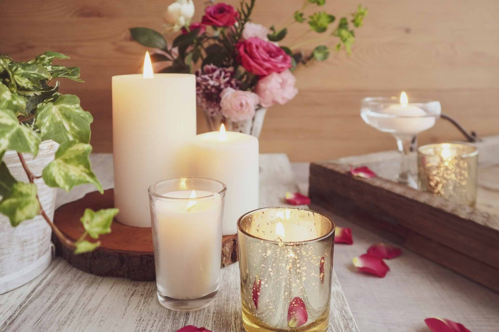

| 【独身と結婚と婚活】誰も教えてくれない将来のあなたに大切な２８のこと: ～結婚活動のちーちゃんが肌で感じた早いうちに知ってほしいリアルな話し～ | |
| 鈴木千春 山梨恋活コミュニティ | |
| (2019) | |
私もうやばいんじゃない？
不安...焦る...
↓↓ではなく...↓↓
今からでも大丈夫！安心して！
一歩ずつ進めば何とかなる！ ｂｙちーちゃん
【独身と結婚と婚活】誰も教えてくれない将来のあなたに大切な２８のこと
～結婚活動のちーちゃんが肌で感じた早いうちに知ってほしいリアルな話し～
山梨恋活コミュニティ 代表
婚活トータルアドバイザー 鈴木千春
婚活トータルアドバイザーちーちゃんの
『【独身と結婚と婚活】誰も教えてくれない将来のあなたに大切な２８のこと 』
～結婚活動のちーちゃんが肌で感じた早いうちに知ってほしいリアルな話し～
手に取ってくれてありがとー。ではまずね...
【自分の人生について考えたことありますか？】
まず最初の出発点として...あなたの人生はあなた自身しか決められないということです。でもそんなご自身の人生でも【今】しか考えて生きていない方が多く...。もちろん悪いことではありませんが、先を考えていれば後悔もしなくて済むこともたくさんあります。けど、先を考えれば何だか気持ちが重くなる...という方ももちろんいることでしょう...。でも
『こんな予定じゃなかった...』
とならないために自分の人生設計【ライフプラン】についてはぜひ少しでもいいので考えておいてくださいね。そもそも人生設計というと何だか壮大な感じがしますよね...。人によっては【保険の営業か？笑】と思われる方もいると思いますのでまずは簡単にご紹介させて頂きます。そもそも皆さんの人生ってどんなことがこれから起こると思いますか？成人するまでは御両親により大切に育てられ...誕生日や七五三、入学式卒業式などのイベントを経験してきたことでしょう。では成人以降について考えてみると...、女性の場合、就職・結婚・出産・子育て・退職・転職などの大きな出来事を始め、引越しや職場内での異動などの出来事も起こるでしょう。もちろん、男性の場合は女性とは違ってきますし、出身地や現住所、社会的習慣などによってもいろいろな出来事が予想されます。さらにお伝えしておくと、今まで面倒を見てくれていたご両親は健在のうちはいいのですが、いずれあなたが面倒を見る番になります。そうです【親の退職や介護】ということが考えられます。今社会的に【お一人様】という結婚を選択されない人が増えているという話を耳にしますが...。では結婚しない場合何十年後あなたはあなたの両親の面倒を見ながら仕事をするということが起こり得ます。もちろんそれまで貯蓄をしっかりしていればいいかもしれませんが、現実として何が起こるかわかりません。女性の場合頼りになる男性がいると頼もしいと思い結婚を選択される方ももちろんいます。先ほどもお伝えした通りもちろん先のことを考えずに生きている方もいますしそれが良いとか悪いとかではありません。でも...
【自分らしい生き方】
が出来るとなんだかワクワクしませんか？これからの将来を考えた際に楽しい生活が待っていると思うとなんだか頑張りたくなりませんか？そういう意味でもこれから先５年後、１０年後、２０年後、３０年後、４０年後、５０年後とご自身の人生設計を少しでもしてみると必ずプラスになると思います。ご自身の今後をイメージ出来ると...、『自分らしい生き方』のために将来何が必要で今何をするべきか？というのが見えてきますよね？もちろん自分らしい生き方ですので人と同じ部分もあるかと思いますし、人とは全く違ったやるべきことも見えてくるでしょう。
『そんなこと言っても自分の将来なんてイメージ出来ない...』
と思われたそこのあなた。では簡単な例でお伝えすると...、成人になり学校を卒業すると就職して何かしらの仕事の経験があるかと思います。仕事の場合、よく【準備が９割】という話を聞いたことがあるかもしれないです。何をするにも準備というのは大切でして...。あるプロジェクトを任されたらその運営がうまく行くように準備しますよね？当日行き当たりばったりですと上司から雷が落ちますよね。もしくは、日常の仕事でもある程度慣れてきた仕事は上司に聞かなくても先を予測しながら作業をこなしますよね？他には、過去に経験した仕事で失敗や難しい思いをした仕事だと同じような仕事をふられた時、事前に考えて失敗しないように行動しますよね？と言う感じで仕事の場合は会社の社長が将来の方向性を決めて上司から具体的にやることを指示されて作業を行うということを行っていると思います。仕事の場合は将来の予測を会社という船に例えるなら社長がかじ取りを行っています。では、あなたの人生という船に乗っているのは誰ですか？独身の場合はあなた一人ですよね。（もちろん結婚すれば家族が増えるわけですから乗る人は増えますが...。）では誰が船のかじ取りをするんでしょうか？あなたしかいないですよね？そうなんです。
【あなたの人生と言う船はあなたが将来に向けてかじ取りする必要がある】
のです。
『そんなこと言われても会社の社長のように先なんて考えられない...』
という女性のために本書を書かせて頂きました。もちろん私もあとで経歴はお伝えしますが、２０代３０歳前後では人生の先のことを考えていたかと言うとそこまで考えていませんでした。でもそこで後悔や失敗をたくさんしましたので、同じ間違いはしなくてもいいかなと思い言葉にて伝えさせて頂ければと思っています。ぜひ本書を参考に人生設計を早い段階で考えてもらい【自分らしい人生】をエンジョイしてもらえればと思います。とくに女性の場合は、結婚や妊娠・出産・育児という部分では男性とは大きく異なります。
【自分らしい生き方が出来るように情報収集や知識を学び、人生の選択肢を広げ理想の自分を探してください】
こんにちは。婚活トータルアドバイザーのちーちゃんです。まず最初にということで、私の簡単な紹介から。鈴木千春気付けばもうすぐ○○ 歳(笑) 気持ち的にはまだまだ２０代なのですが ...(笑) 私も婚活経験者で現在は婚活イベント団体【山梨恋活コミュニティ】の代表をしながら、恋愛・結婚したいけどなかなかうまくいかない女性のサポートをしています。サポートをする中で婚活イベントの参加の有無に関わらず、自分自身の人生に漠然とした不安って女性特有の悩みを抱えている方が多数います。
『このまま独身だったらどうしよう』
『この仕事を一生続けていけるのかな？』
『結婚したいけど結婚できるのかな』
『回りの友達は結婚しているけどなんで私だけ...』
不安が不安を助長して...。人生ですので何をしても正解はなく...。もちろん何が間違っているわけでもないのですが、漠然と不安だけが頭をよぎりますよね。ではなぜ不安になるのか...。
【自分の将来が起こりえることが大体でも理解できていないから】
ということがあります。少しでもライフステージで起こりえることが分かってしまえば、多少は不安は解消すると思います。ちょっと話しが脱線しましたが、話をもどしますね。肩書は婚活トータルアドバイザーということで華々しい感じがするかもしれませんが、要するに
『あなたの将来のことを一緒に真剣に考えますよ』
ということです。私の場合は、婚活という視点から皆さんに関わらせて頂いているのですが...。
【女性にとって結婚って...。人生の分岐点】
だと私は思います。だって、結婚する男性によって、私たち女性の生活は１８０度変わるし、出産・育児でもどんどん変わっていきます。３３歳の時に無事結婚してその翌年可愛い娘を出産しました。ですが、私個人の生活で考えると...。バリバリと仕事をしていた２０代に比べて生活はもちろん激変しています。婚活イベントで多くの女性に関わらせて頂いていますが、家に帰れば母親です。女性って休む暇がない。と日々痛感しています。と前置きが長くなりましたが、今回の本を通して女性の皆さんに知っておいてほしい事、
【それはあなたの将来】
についてです。一個人がそんな偉そうに...。と思われるかもしれませんが、そんな気はもちろんありませんし、偉そうに語る気もありません。ですが、知っておいて損はしない内容をお伝えできればと思います。私も今になって思うのですが...。もっと早くから先の事が分かっていれば結婚も早くしていたのに...。実はここだけの話し２０代で結婚の話しもあったのですが、
『仕事が楽しいー！』
『遊ぶのが楽しいー！』
『今人生充実しているから結婚はまだいいー！』
という先延ばしをしてきたタイプでした。でも今３０代中盤になり切実に感じているのは...、
【結婚して子供が出来たとしても仕事は出来るしやりたいことは出来る...けど早い方が良かったな】
ということです。えっ！と思われた方もいるかもしれませんが、話しが矛盾していますよね（笑）
結婚して子供が生まれて...。生活が不自由になると思って先延ばしにしていた『結婚』でしたが、２０代で結婚しなくても２０代のうちに知っておいた方があと後の自分にプラスになることを今回ご紹介させて頂きますね！
【結婚も仕事もやりたいこともいつでもどこでも出来るけど、過ぎた時間は返ってこない。だからこそ今の自分と将来の自分を理解して、後悔の無い人生を過ごそう】
ということです。では一緒にこれからのあなたについて考えながら知っておいてほしい事をお伝えしますね。
『【独身と結婚と婚活】誰も教えてくれない将来のあなたに大切な２８のこと 』
～結婚活動のちーちゃんが肌で感じた早いうちに知ってほしいリアルな話し～
目次
４、先延ばししない、やりたいことはとりあえず行動する！臆病にならない
１１、たくさんの人と出会い人脈を広げてみる、人を見る目を養う、交流する
１３、男女関係なく理想の人と付き合う（あこがれる人）目上関係なく
毎日を何となく過ごすのではなく、夢や目標を持つことで自分自身輝くことが出来る。始めから高い目標を持って良いが、小さな事でも可。人生夢・目標を持って生きる楽しさを味わう。
最初に伝えたい事第一位は...。夢や目標を持って挑戦すること頑張ること。最近の書籍や自己啓発セミナーでは情報化社会から目標や夢を持たなくてもいいという風潮がある話を聞いたことがあるけど、人生においては夢や目標は、あった方が生きがいとしてはプラスだと思うの。私も２０代のときは、連休の時の海外旅行を目標に毎日仕事をした思い出があったり。私の場合は、全力で仕事して全力で遊んでという２０代を過ごしてきたけどそれが普通だった。海外旅行を毎年行きたいと思い１０年のパスポートを選択した経緯も。夢や目標はその時の自分が選んだものなので、もちろん大切ですが、変わるのも仕方ないよね。その時の自分の目標や夢を構築して挑戦することは大切かなと。また夢や目標が出来ても...夢のまま終わってしまう。頑張らずに終わってしまう事ってあるよね。私も頑張れることは頑張ったけど、頑張れないことは挫折したこともたくさんあります。けどやらずに終わるのとやったけどうまくいかなかったというのは
【自分の経験として大きく人生を左右します】
これは今３０代中盤になって実感している。２０代の経験が今活きていることもあるし、逆にあれをやっておけばよかったと後悔していることもあるよ。だからこそ今若い今こそいろいろと挑戦してみて。仕事だと結果が全てということが大抵ですが、皆さんの人生においては確かに結果も大切ですが、その経験と過程は人生の糧になるよ。ここは自信をもってお伝えできます。だからこそ今の夢や目標をもって取り組んでほしい。夢や目標はもちろん仕事のことでもいいですし、趣味や日常生活のことでも何でもいいです。まずは自分が熱心に取り組んでみたいという事を一つでも二つでも決めて挑戦してみて。今はあまり意味がないことでも必ずこのあとのあなたの人生に役立つ事間違いなしだよ。
夢や目標を持つことで自分自身輝ける！始めから高い目標を持って良いが...
小さな目標でもＯＫ！
夢・目標を持って生きる楽しさを味わう！
ｂｙちーちゃん
挫折は出来ればしたくないと思うけど...。そのまま落ち込んで自分はダメと思うのではなく、挫折から何を学ぶか？挫折して人は成長するもの。原因を受け止め前向きに考える。同じ失敗を繰り返さない。
夢や目標を挑戦したり頑張ると...。成功するか失敗するかのどちらかになるよね。仕事だと失敗すると上司から怒られたり売上が減ったりするかもしれないけど、失敗や挫折は人生においてはすごいプラスになるなと３０代になってから実感。今相談や質問をする２０代女性の多くは失敗を恐れたり、挫折を恐がったり...と私からすると非常にもったいない。決して失敗しても挫折しても命が無くなることはないんだから。だからこそ思いっきり失敗と挫折をしてもいいのかなと思います。ましてや若さがあるからどんなことでも乗り越えられるよ。と思っちゃいます。今の私からすると２０代の時の挫折と今の挫折では何十倍も変わってきますからね。２０代のときはそんなこと考えても無かったけどね。今だからわかる話し。仕事もそうだけど、人生も恋愛もどんどん失敗と挫折を経験してみて。女性だと恋愛は待ちたいよね。素敵な男性から声かけてもらえればこんな幸せなことはない。と私も思っていました。けど、待っていて何もなかった恋もたくさんあってその度に行動出来なかった自分に後悔をしていたよ。今考えれば自分から行動して失敗してもその男性と会わなければ何も障害が無いわけで...。そもそもふられたら会わないし...。けど２０代の時は声をかけてふられたら、断られたらと思ったら行動しにくいよね。わかるその気持ち。けど人生は一度きり。今の歳のあなたは今しかいない。だからこそ後悔しない人生を歩んでほしいの。失敗しても大丈夫。簡単には死なないから。挫折を繰り返せば強い人間にもなれるからへこたれなくなるしね。失敗や挫折を恐れないでどんどん活動してみて。頑張って何かに挑戦して失敗したとしてもそれは挫折とはいわない。結果がどうであれ一生懸命頑張ったので挫折ではなく良い経験。この経験の積み重ねが次の成功する確率をアップさせるよ！
落ち込んで自分はダメと自虐もいいが...
【挫折から何を学ぶか？】
挫折して人は成長するもの！
原因を受け止め前向きに考える！
同じ失敗を繰り返さない！ ｂｙちーちゃん
社会人になり２０代前半、普通に恋愛して２０代で普通に結婚する（出来る）と思っていた...。時が過ぎ気付けば３０歳目前『あれ？結婚出来ないな...笑』ある程度決めていたら行動出来ていたのだろう。見る事考える事で意識はいか様にもなる。
自分の人生について考えたことある？私は２０代の時無かった（笑）。けどあの時考えていれば今とは違った人生を送っていたんだろうなと思う。もちろん、人生を考えることが大切じゃないからね。考えておくと大体どういう感じになるかわかるから、気持ち的に楽だよね。２０代のころは、楽しければいいかな的な思考だったから...私。一日一日を生きている感じだったなぁ。もちろん今自分の人生を考えて行動している女性もたくさんいると思う。それは今後の自分にとってプラスになると思うよ。今まで私みたいに毎日楽しい人生を歩んできた女性はちょっと立ち止まって自分の人生について考えてみて！ポイントは
【何となく自分の人生について考えてみること】
くれぐれも真剣に考え過ぎないでね。人って比較的考えると悲観的なことをイメージする傾向にあるみたいだから真剣に考え過ぎるとマイナス思考になっちゃうともったいないからね。そこは大体でいいよ。例えば、いつくらいに結婚したいとか、いつくらいに仕事転職してやりたいことをやるとか、いつくらいまでにお金貯めて新しい車買うとかでいいと思うの。忘れちゃいけないのが、女性の人生を大きく変える可能性がある結婚ね。これ私一番後悔しているの、実はね。今２歳の可愛い娘がいるんだけど、これがあと５年１０年早かったらと思うと、
『２０代の時、なんで誰も教えてくれなかったの？』
と誰かを責めたくなることもある。だってあの２０代の若さがあれば、子育てってもっと気持ち的にも肉体的にも楽な気がするから。２０代のときはオールで遊んでも次の日の仕事に影響がないくらい元気だったけど、３０代中盤になってきたらいかに体のケアをするかが最優先事項だからね。もちろん個人差があるから絶対じゃないからね。誤解しないでね。けど３０代よりも２０代の方が子育ては楽だと思うよ。だからこそ教えてほしかったよね。結婚について。大体の人生設計なんて紙に書いてみないと実際のところイメージ出来ないことばかり...。頭の中で描いているのと実際に書き出してみたのは...現実は違い...時間はどんどん過ぎて行く...。ある程度のプラ ン( 自分の理 想) を出してみて、それを見ることにより現実になり目標が立てられる。叶える努力はしたいよね。
でも気付けば３０歳目前
『あれ？結婚出来ないな...笑』
ある程度決めていたら行動出来ていた...
見る事考える事で意識はいか様にもなるから諦めないで！ ｂｙちーちゃん
今やらないと時間だけが過ぎて行き、年齢を重ねるともっと一歩を踏み出すのが難しくなる。こんなに足が重くなるとは思ってもみなかった。先延ばしにしてしまう原因の一つに臆病（マイナスな気持ち）がある。目先の事だけ見ると不安や恐れが...。輝くゴールを思い浮かべチャレンジ。フットワークを軽くね。
『今やりたいことやってる？』
『先延ばしにしていることある？』
これ実は大切だよ。やりたいけど行動していないことってあるよね。私も２０代のときはたくさんあった。あれもこれもやりたいけど...、やってこなかったことたくさんあるよ。もちろんどうでもいいことはやらなくてもいいけどね。とにかくやりたいことは行動してみて、前にも伝えたけど失敗しても挫折してもいいの。行動した自分が大切だよ。リスクがあることでも臆病にならずまずは行動してみて。長いあなたの人生からすればその臆病は一コマに過ぎないし、５年、１０年後までずっと引きずっていることはほぼないから。逆に笑い話になることがほとんどだと思うし良い思い出になっちゃうから。けど臆病になって行動しないと後悔は残る。私も２０代のときなんでやらなかったんだろうと後悔したことは今でも覚えているしね。とにかく出来ることは行動してみて。大丈夫。失敗してもあなたにとってプラスになるから！
先延ばししても年齢だけが...、時間だけが過ぎてしまう。あとでやろうができない。臆病になるのは、失敗や恐れからくる恐怖が多いが...。自分が成功したときのゴールをイメージしてそれに向かって進んでみる。やりたいことはどんどんした方が良い。一回チャンスを逃して も( 諦めて も) またやりたい！って思う時が来る。その時、出来る環境かわからないよね。出来なかったらイライラしたり、後悔が残る。やっぱりやりたい気持ちはやってみる精神でトライ。誰 か( 友人ＯＲ家 族) に背中を押してもらうのも良し。出来 る( やりた い) タイミングを逃さないようにね。
歳とともに足も重く...！これは想定外(笑)
原因の一つにマイナス思考！
目先の事だけ見ると不安や恐れが...
輝くゴールを思い浮かべチャレンジ！
フットワークを軽くね！ ｂｙちーちゃん
仕事を決める大人の第一歩。私は初めに就いた職業は子供の頃からの夢だった職業。入院した時の看護師さんに憧れて...。夢のナース服を着たいと思っていました（笑）。他にやりたい事が見つかったが、なかなか辞める勇気もなくただ夢のままで終わってしまうのかなと思っていた。周りにも口に出す様になって本当にやりたいんだって自分で確認することが出来て転機を迎えられた。やりたい仕事は苦しい事はなく、楽しくてたまらなかった。
あなたの人生は一度きりですよ～。そんなこと言われる前からご存知ですよね。けど分かっているようで分かっていないことがほとんどなの。実は私もそうだった。親や会社の先輩からアドバイスをもらっても楽しいことしかしなかった私。今思うともっと忠告を聞いておけばよかったと思ってこれを読んでいるあなたに伝えたいの。
『今流されてい生きていない？』
『今の仕事楽しい？』
『今の自分は自分で選択した？実は選択したい人生ってあるんじゃない？』
というのを伝えたい。今この瞬間は何度も言うけど今しかないよ。今やりたことをやってみて、きっと５年後１０年後のあなたは良い人生を送っているはず。けど、流されたりやりたいことを出来ていないと...。苦しい自分に５年後１０年後会わないとならないよ。もちろん今の状況がわるいわけじゃないの。けど自分の人生だからこそ自分で決めて選択して行動してみて。正しいとか間違っているとかじゃないからね。
【一度きりの人生だからこそ悔いのない今を過ごして！】
仕事はどう？楽しい？充実している？よく会う２０代の女性は、仕事はお金の問題であったり楽しいかというと生活しなきゃならないから...という理由で楽しそうじゃない人が多いように感じるよ。もちろん、きれいごとをいいたいわけじゃないの。けど、仕事は一日の中でウエイトを占めているからこそ大切だと思うの。もちろん給料って大切だよね。お金がないと欲しいものも買えないし、行きたい所にも行けない。けど仕事が楽しかったり充実していないとあなた本来の素敵なところが見えなくなっちゃうしもったいないよ。私も何度か転職経験があるんだけど...、給料で選んだ仕事ややりたいから選んだ仕事など、もちろんやりたい事で給料が安定しているのが一番いいけど、なかなかないよね。というときにどちらを選択するか？私は楽しい充実した人生を送れたのは給料面よりも楽しいややってみたい仕事だった。毎日仕事に行くのが楽しかった。なので後悔はしていない。自分の人生だから考えてみてね。きっかけになってくれれば嬉しいです。
他にやりたい事が見つかったが、
辞める勇気もなくただの夢で
終わってしまうのかなと...
でもきっかけで転職！
やりたかった仕事は苦しい事はなく、
楽しくてたまらなかった！ ｂｙちーちゃん
私の２０代の頃は一人暮らしをしている友人がほぼいなかった。私も実家はオアシスでした（笑）。ご飯を作ってもらい洗濯も母任せ。『いざ結婚をした時に出来るのか？』一人暮らしは独身の時にしか出来ない。結婚してからでは出来ない。
～ポイント～一人暮らしをすることによって時間配分が上手になった。無駄な時間を作らなくて良い。経験はお金では買えません。必ず活かされる時が来る。人と比べるわけではないが独立心芽生え親のありがたみが改めて分かると思います。
ここで質問！
『１人暮らししたことある？』
私も実はずっと実家だったんだけど、転職したきっかけで１人暮らしをしてみたの。もちろん実家から近かったけど、してみたかったの。１人暮らししたら...人生の価値観というか今までとは見えている景色が同じなんだけど、考え方や行動が変わった。３０代の今思うと１人暮らしは私の選択としてはプラスになった。もちろん絶対じゃない。でもあなたの人生において一度くらいは１人暮らしをしてみるのもいいかもよ。今だからこそ出来ること。逆にこれから先出来ない事かもしれないから。そういう意味では１人暮らしはおすすめ。でも１人暮らしはメリットデメリットがあるからよく検討してみてね。まずメリットとしては、一人なので自分ですべてしないとならないから生活力が身に着く。これは私も経験して始めはめっちゃ大変だったけど慣れれば全然平気になったよ。炊事洗濯など、実家だと親に頼ることも多かったけど１人だからね。やるしかないし。あとお金の管理。実家だとお金は少し入れていたけど、実際に１人暮らしになると家賃と光熱費は絶対かかるし、お金をいかに管理するか...これって結婚したあとにも役立ってる。先に経験しといた方がいいと思う。金銭面の価値観で結婚したあと離婚する人も多いみたいだからね。金銭感覚がないとふられる原因にもなるから気をつけて。あと私が一番メリットだなと感じたのが、寂しいということ。一見寂しいってデメリットじゃんと思われるけど...。でも寂しければ誰かに会えばいい。さらにいうと彼氏を作ろうという気持ちになるよね。私も寂しくて彼氏が欲しくて積極的に行動してたよ。実家だと１人になることが少ないからあまり感じたことがなかった。今思えば良い経験だったなと思うよ。逆にデメリットだけど...一番はお金かな。お金の管理が出来るようになるけど、実家暮らしよりは出費が多いからね。ここは注意が必要。経験を取るかお金を取るかって感じかな。経験は大切だけどね。
ということで一人暮らしのメリットは...
☆経験はお金では買えない
☆家事が出来るようになる と( 慣れてく る) 『いざっ！！』と言う時に出来る。
☆共働きの時代...男性も料理が出来る人がいるわけで...
☆女子力アップに繋がる。親から離れて暮らす...自立心が芽生えて成長するね。
『結婚をした時に出来るのか？』
一人暮らしは独身の時にしか出来ない！
結婚してからは二人暮らし！
だからこそ今味わっておくと
世界が広がる！ ｂｙちーちゃん
わからない知らないことは聞くか調べるかして納得する事。ことわざで【聞くは一時の恥、知らぬは一生の恥】とあるように聞くのは恥ずかしいと思っても聞かなければ一生知らぬまま過ごすことになるのでその方が恥ずかしい。知ったかぶりにせず素直にどんどん聞いてたくさんのことを吸収してね。社会で２０代はまだ許してもらえる範囲。３０代は自分が教えられる立場でいたいね。
前には１人暮らしっていう目に見える変化をお伝えしたけど、今度は目に見えないことを伝えるね。意外と今痛感していることが...
【わからないことをわからないままにしていると成長が鈍る】
【わからないことを調べたり聞いたりすると社会人として成長する】
これって意外と大切なんだよね。どういうことかっていうと、２０代でわからないというとまぁ、仕方ないかで教えてくれたりしょうがないで済むけど...。３０過ぎて知らない事が多いと、単にバカにされたり相手にされなくなるよ。これには私も驚いたけど、私はどちらかというと知らないことが多かったタイプの人間だけど...今わからないことがあるとやはり聞きにくいし...、そんなことも知らないの？と思われちゃうからね。今若いうちに恥ずかしがらずに知らないことはどんどん聞くなり調べるなりした方が絶対にいいよ。世間をしらないと...結婚への障害にもなるからね。気をつけて。
わからない知らないことは
聞くか調べるかして納得する事！
あなたの未来に繋がるよ！
ことわざで
【聞くは一時の恥、知らぬは一生の恥】
ｂｙちーちゃん
今は趣味が無い人もいる時代。なんだか寂しいな...。何か打ち込める事を見つけてもらいたい。なぜか？一つの事に打ち込む姿は素敵。そして、最後はやり遂げた達成感を味わうことによって得るものはあるから。私は夢中になってやってしまうタイプ。出来た時の達成感って自分への自信にも繋がるよ。今後何をやってもうまく行くと思えるの。結果が大事なのではなく、その過程。例え失敗してもやり遂げた自分への頑張りや根性ってすごいよね。決して後悔はしたくないと思うの。どんどんチャレンジ精神を持って進んでほしい。
挑戦するとか頑張ると類似しているけど、何でもいいから打ち込んでみて。やり遂げたり達成感を味わうって大切だよ。何か夢があれば叶えることも大切。小さな経験をコツコツと積み重ねていくと...。自分の自信にもなるし達成感って実は自己成長の上ではかなり大切だよ。私が今こうやってみんなのフォローを出来ているのも２０代のときに経験が大きな糧になっているから。２０代のときにいろいろな経験をしていなかったら今この仕事はしていなかったと思うし、みんなの前にはいなかったと思う。もちろん私の場合は例外かもしれないけど、何かに打ち込んで自分なりにやり遂げるのはいいよ。もちろんうまくいくことや失敗することもあるけどね。
結果も大事だけどその過程も大切！
例え失敗してもやり遂げた
頑張りや根性ってすごいよね！
後悔はしたくないと思わない？
チャレンジ精神を持って進んでほしい！
ｂｙちーちゃん
【素直になる事は人間関係が繋がるための大切な事】自分の素直な気持ちを伝えるって誰かに嫌われたらどうしようって気持ちが邪魔するよね。でも自分の気持ちを素直に伝えないと信頼関係が生まれないと思うの。難しく考えなくてどこか行きたいときには行きたいと言えばいいし、好きな人には好きと言えば良いんだよ。曖昧な言葉は全く心に響かない。あやふやにしないで自分の気持ちを素直に伝えることで人との付き合いがうまく行くよ。自分のセンスが良くなくて落ち込む事ってあるよね。あの人のセンスがうらやましい...。あの人はセンスがあるから...。と言って自分は諦めていない？センスって特別な人に備わった機能ではない。皆平等に持っているんだと思う。大事なのはいかにセンスを磨くか。それにはやっぱり知識を身につけることだと思う。今流行っているモノを知る。知識を身につけて『良いか悪いか』自分で判断して行ってね
今自分の気持ちに素直に行動している？私の場合は今思うと２０代は強がっていたなとすごい思う。もっと素直に自分らしく生きたらもっと楽しかったのになと思うよ。恋愛でも同じだし仕事でも同じだと思う。自分がどう思うかもっと伝えていいと思うし、自信をもっていいと思う。あと、素直になるのと似てるけど、自分のセンスを磨くといいかも。センスって経験からしか得られないことだと思うの。もちろんどんなセンスでもいいと思うよ。仕事の内容のセンスとか服のセンスとか何でもいいの。このセンスってすぐに何とかなるものじゃないからね。どんどん積み重ねないとならないから時間がかかる。私も前にアパレルや雑貨屋さんで働いた事あるけど...。昔の経験が今になって活きているよ。その時はそんな先のこと考えないで仕事していたけどあの時選択して良かったと今は思うよ。
【素直な事は人間関係が繋がる大切な事】
素直な言動で相手に嫌われたらどうしようって気持ちが邪魔するよね...
でもまずは素直な気持ちを伝えないと
本当の信頼関係が生まれないと思う...
ｂｙちーちゃん
好きなものに囲まれた空間これってすごくワクワクしない？服だったり、小物だったり部屋...車...食べ物...たくさんあるよね。自分の好きなものに囲まれているといつも幸せな気持ちになれる。無理に好きになるのではなく自分の心が言っている『キュン』を大切に。これも個性。自分のスキをアピールしても良いね。好きなものはしょうがない（笑）。
あなたは『自分の好き』ってある？異性のタイプでもいいし、好きな食べ物でもいいし。とにかく好きをたくさん見つけてみて。意外に人って流されやすいでしょ。友達が良いって言ってるから...。テレビで芸能人が良いって言ってたから、雑誌に今年の流行って書いてあったから。などなど、人は人、自分は自分だと思うの。まずは自分の好きなものさしを使って見てみて。自分の好きなものがたまたま流行っているものと同じでもいいけど、みんなが良いっていいてるからだとあなたの個性がもったいないよ。いいの十人十色だからあなたらしくいられることが一番大切。実は私も２０代のころは回りの目を気にしていて...好きでもないものを使っていた経験があるよ。だけど好きじゃないから好きになれないし...当然だけど、そんな自分も好きじゃなくなることもあるよ。それってもったいないじゃんね。自分らしく自分の『好き』を見つけてみて、きっと５年後１０年後のあなたは好きに囲まれて楽しい人生になっているよ。
好きが多いと幸せな気持ちにならない？
自分の心が言っている『キュン』を大切に！友達と一緒じゃなくていい！個性でＯＫ
自分の好きをアピールしても良いね！
好きなものはしょうがない（笑） ｂｙちーちゃん
私は人見知りだったりする（笑）今は克服？人に慣れた？なんて言うんだろう。逆に人との交流が好きになりました。たくさんの人と出会えばたくさんの世界を知れる。自分の友人はどこか自分に似ているタイプが多いのかな？って思う。今まで知らなかった世界を知れるって知識として成長出来るよね。人とのコミュニケーションもポイント。今は人と会話する事が少なくなっているよね。メール・ライン・ＳＮＳ・ネット上での会話...誤解も多いんだろうな。直接会ってその人の顔を見て話す楽しさを大切にしてほしい。きっとたくさんの方と交流を持てば持つほど人を見る自分の目は養われると思う。結婚も疲れるって思われなくなるんじゃないかな。知り合いが増えたら自分にもプラスに繋がるね。
今思うともっといろいろな人と交流しておけばよかったと後悔もしているけどね。でも時間は戻って来ないからみんなに伝えたい。仕事で営業とか接客の場合はそういう場面が多いかと思うけど、事務職やあまり人に会わない仕事だと限られた交流になるよね。やはり人間だから...。一人では生きていけないのと一緒で出来るだけたくさんの人と会う方がいいよ。もちろん、婚活という部分でも独身の知り合いがいれば可能性はあるし、独身じゃなくても知り合いが多ければもしかしたら紹介してもらえるかもしれないしね。あと、
【人を見る目を養う】
と後々いいことがあるかも。どういうことかというと、あなたを良い方向に導いてくれるのか逆に足を引っ張られるのか...。これって簡単にはわからないし線引きもないからはっきりとは言えないポイントだけど...。でもこの人に出会ってから何だか良いことあるなとか、逆に悪いことしか起きない人っているよね。それがまさにそう。人を見る目を養って自分にとってプラスになる人脈を広げてみて。今すぐにはわからないと思うけど、５年後、１０年後きっとあなたのサポートやフォローを絶対にしてくれると思う。実は私も２０代のときに、良い縁も悪い縁もたくさんあったけど...（笑）でも多くの人と交流したことで自分にとってはプラスだった。人見知りの女性は最初は抵抗あると思うけど、でも慣れれば大丈夫。だって今まで多くの方と小さい時から交流してきたでしょ。恐れずに多くの人と交流してみて。
基本的にみんな人見知り(笑)
あなただけじゃない...(笑)
交流すれば人を見る目は養われる！
発想の転換で婚活も疲れるって思わなくなるんじゃないかな。知り合いが増えたら自分にもプラスに繋がるね！ ｂｙちーちゃん
美味しいもの＝高いものって発想しがちだけど...。たくさん食べるのではなく少しで良いから美味しいと感じて舌で味わってほしい。こんな食べ物あるんだ～。新食感って言うのも知ってほしい。お腹空いたから何でも良いではなく将来の勉強だと思ってトライしよう。歳を重ねて行くと食事へ行くお店も変わってくる。その時恥ずかしくない様に食べ方やマナーに気を付けたいよね。食べながら勉強。食材やマナーを知っているだけで相手に良い印象を与える。
美味しいもの食べてる？この書き方だと金持ちになれって勘違いされそうだけどね...（笑）私が伝えたいのは、高いものもそうだけど安くても美味しいものって多いと思うの。でも良くないのは...同じ食べ物や食の嗜好が変わらないことってあるよね。これだともったいない...。少しずつでいいので美味しいものを食べる習慣を身につけてみて。立ち寄るコンビニを違うところにしてみるとか、いつもいくファミレスを違うところにしてみるとか、そういう感じからで大丈夫。もちろんいつもよりちょっと高いものを食べることも大切。記念日やお祝いごとがあるときは奮発して自分へのご褒美もかねていつもとは違ったものを食べてみてね。そこからあなたの人生が変わるかも。
食べながら勉強！
食材やマナーを知っているだけで
相手に良い印象を与える！
ｂｙちーちゃん
異性とお付合い（交際）というよりは現在自分の周りにいる同姓・異性を見て欲しいです。学生の頃私が実践していた事を教えるね。学生の頃、私はどちらかというと成績が良くない方だったの。塾に行くのも乗り気ではなかった。でも将来的に頭良い方が得だなと思っていた私（笑）そこで私が実践したのが、頭が良い人と学生時代を共にするということ。休み時間・お弁当・帰宅...を一緒にいました。それまでの私の生活と違うこともあったり良い刺激になりました。時には話しについていけなくて辛い時もあったけど一緒に居て学ぶのが一番効率が良いと思ったから。社会人になると素敵だなと思う先輩と出会い、先輩のようになりたい一心から近づける様に努力しました。やはり憧れる人と一緒にいる事は自分がどんどん成長していくのを実感。始めは真似でも良い。いつか自分があこがられる存在になってくださいね。
付き合うという言葉から連想されるのが異性と交際するという意味のお付合いがメインですが、自分が理想だなとか尊敬できる方と一緒の時間を増やすといいかも。もちろん男女関係なくね。自分がいいなと思う人と一緒にいるということは何かしら自分にとってプラスになることが多いと思うよ。相手に近づくことで思考か行動、生活習慣にも変化があるかも。実は私もやったことがあるんだけど、２０代のうちにもっとやっておけばよかったと今になって後悔...。もちろんお金がある人と一緒にいる時間が増えると...、思考がそういう人の思考に近くなるって海外の実験でそういう結果が出たんだって。確かに一緒にいる人と会話をしたり行動しているとその人の言動が理解できるようになるからそういう観点から見れば一理あるかも。身近に社長クラスの人がいたら一緒に行動してお金持ちの仲間いり？
憧れの人と一緒にいる事は...
自分がどんどん変われるタイミング
始めは真似でも良い！
いつかは誰かからあこがれの存在
になってくださいね！ ｂｙちーちゃん
転職をちょっとでも考えているのなら２０代にする事はおすすめ。私は２０代前半思い切ってやりたい仕事に転職した事があります。楽しい事ばかりではないんだろうな...と思っていたけれど、仕事をしていくうちに、どんどん楽しさが倍増していった。理想な仕事って辛い事が辛くないんですよ。出来なくて悔しくて泣いた事もあります。でも、嫌と思った事は無く、その仕事を７年間続けました。ずっと、就きたかった職業だったのであの時に転職して本当に良かったです。結婚した今この職業に就くのは無理では無いけど厳しいかなと思うので後悔せずにいられて良かったです。今でも戻りたいなってちょっぴり思っちゃう時があったり...（笑）。【人生一度きり、自分の人生は自分が決めて良いんだよ】
『あなたの今の仕事は理想の仕事ですか？』
今エッ？と思ったそこのあなた。図星でしょ？やりたい事を仕事にしてる？今すぐやりたいことを仕事にすることをおすすめします。だって理想の仕事の方が仕事楽しくない？単純にそう思うでしょ？だって理想の仕事なんだから...。私もいろいろ仕事したけど...。やはり自分がやりたい仕事は楽しかったし、楽しくない仕事は何だか押しつけられている感じがしてストレスマックス。今の仕事でストレス感じてる？大丈夫？ちなみに私はストレスで体を壊した事あるけど、同じ経験をしたこともあるかな。二の舞にならないように楽しい仕事をしてみて。もちろん諸事情ですぐに転職できない事情もあるかと思う。でも体のことを考えて、肉体的疲労よりも精神的疲労の方が病気や体調を崩しやすいからね。まだ若いから大丈夫かと思うけどそのうちしんどくなるよ。注意してね。
これからは楽しい事を中心に！
【人生一度きり、
自分の人生は自分が決めてＯＫ！】
だからこそ好きなことを
仕事としてやってみよう！ ｂｙちーちゃん
この世界というのはいろいろな意味があって自分の知らない世界を全て言う。自分とは別の職業内の内容だったり、自分には持っていない趣味を少し興味をもってその世界に一歩踏み行ってみる。きっと見る世界が変わるよ。今後いつどこで役に立つか分からないけど、きっと役に立つ日がくるはず。
タイトルが壮大にいきなりなったけど...。別に私が世界一周旅行をしたわけじゃないからね。日本にいても世界を見る事は今の時代可能だよね。いろいろな見聞を広げておくと必ずいつか役立つよ。前にも書いたけど今は知らなくても大丈夫だけど最低限の教養レベルのことは歳を重ねると知らないと恥になるからね。５年後１０年後知らなくて恥をかく前に今いろいろ知っておこう。
壮大なタイトル...(笑)
価値観や個性・感受性が変化する瞬間！
今後いつどこで役に立つか分からないけど、きっと役に立つ日がくるはず！
ｂｙちーちゃん
漫画本専門の私...、もっと本を読んでおけば良かった。本を読む人は知識が多いと思うの。話す会話だったり文字を書く時にすらすら言葉が出てくるね。ちゃんとした日本語を作れる大人になりたい。本じゃなくても辞書でも良いかも。漢字の勉強にもなるしね。まだまだ知らない言葉はたくさんある様な気がする。
私も実は本をたくさん読んだ方じゃなからこそみんなに伝えたい。若いうちに...時間があるうちに本は読めるだけ読んでおいて。私はあまり読まなくて後悔してるから今読めるだけ読んでる実は...（笑）２０代のうちに様々なジャンルの本を読んでおけば教養もつくし専門書をメインに読んでもいいと思う。人によっては転職のときのプラス材料になるかもしれないし長い人生では必ず役立つときがくるから。
『えっ？このタイミングであの時の本が役立つとは...』
と何度も想った事ある。
もっと本を読んでおけば良かった...
ｂｙちーちゃん
自分のためはもちろんお友達、家族の為にもお金を使う事は良いね。無駄使いではなく自分に本当に必要な事になら惜しみなく使って良いと思います。２０代だからこそお金の使い方は学んだ方が良いね。
無駄遣いって意味じゃないからね。うまい言い方をすると自分に投資するということ。もちろん有形でも無形でもいいと思うの。無駄遣いって言うのは何のためにもならないこと。だけど自分にとってプラスになることは惜しまず投資することは大切。私も２０代のときは無駄遣いのオンパレードだった（笑）。けど中には自分に投資したことも少しありそれが今では活かされていることもあるよ。今すぐに効果が出なくても、将来の自分に向けて今の自分からのメッセージみたいな感じかな。今の自分が将来の自分を構築しているからね。今何を選択するかが実は大切だよ。
貯金が趣味！全然ＯＫ！
ケチと倹約家の違いは使う時に使えるか...
ケチはモテ無いけど倹約家はめっちゃモテる
時には自分のためはもちろんお友達、家族の為にもお金を使う事は良いこと！
ｂｙちーちゃん
２０代の頃の私、実家暮らしで家事を全くやらず親がしてくれるのが当然と思っていたあの頃。今思えば親孝行していなかったな。一人暮らしを始めて、親のありがたみを感じました。自分が歳を重ねて行けば一緒に親も歳を重ねて行く。『親の願いは幸せな結婚をしてほしい』と言われた事があります。結婚は自分のおためだけではなく親が安心してくれるこれも親孝行の一つなのかなと思います。私も子供が健康に成長し幸せになってくれたらそれだけで十分。子供が幸せでいてくれる事が何より嬉しい。子供を産んで初めて思った感情。元気な顔を見せる。声を聞かせる。誕生日にはおめでとうを伝える。感謝の気持ちを伝えるのは親にとって嬉しい最高のプレゼント。【親孝行とは親を幸せにしてあげる事】
『親孝行してる？』
実は私は２０代のときはほとんどしていなかったの（笑）もちろん両親はまだ健在なので今ちゃんと親孝行している。けど、何かあってからだと親孝行って出来ないよね。私も最近３０過ぎてから切実に感じるようになり...。今出来る事は積極的にしています。もちろん何をするとかじゃなくて自分の出来ることでいいと思う。親に連絡する回数を増やすとか、実家に帰る回数を増やすとかでもいいと思うの...。一番の親孝行は結婚して孫の顔を見せる事かなと私は思って何とか結婚できたよ。
いつかは出来なくなるからこそ...
今すぐ伝えよう！
感謝の気持ちを伝えるのは
親にとって嬉しい最高のプレゼント！
【親孝行とは親を幸せにしてあげる事】
ｂｙちーちゃん
ずっと行ってみたかった海外。口には出していたけれど自分からはなかなか行動出来ず...。その時友人から海外旅行のお誘いが...。迷いもなく『行く！』って言ったのを今でも忘れない（笑）初めてのパスポート、念願のパスポートを手にした時は大人になった感じ（笑）。何もかも初めてなのでドキドキだったけどやって出来ない事は無い。また行こうと言っていた友人もその後行けなくて先延ばししても行けない。行けるときは行く。計画立てて行こう。日本以外の文化を知って触れて学んで吸収する。日本以外の人とのコミュニケーション。言葉の壁...きっといろいろな発見が待っているよ。
海外旅行行ったことある？私も何回か行った事あるけど、海外旅行っていいよね～。最近は治安の悪いところもあるけどね。けど人生一度は行った方がいいかと思う。私も実際に初めての海外旅行は不安だったけど行って良かったと思ってるし、その後の人生観がすごい変わった。この話をここで書いちゃうと方向性が変わってきてしまうから気になる場合は直接私ちーちゃんまで聞いてね。私も実は１０年のパスポートを取得したけど...３０代になってからはなんだかんだでいけていない...。もっと２０代で行っておけばよかったとすごい後悔してる。あんなに時間があったのに...。
日本以外の人とのコミュニケーション！
新しい刺激で新しい自分に脱皮か？
言葉の壁は不安だけど...
きっといろいろな発見が待っているよ！
時には勢いで行動！(笑) ｂｙちーちゃん
勉強やいろんな事を学ぶのに絶対損はない。勉強と言うと嫌なイメージがあると思うけど、自分の興味があるもので良いと思う。嫌々ではなく楽しく学ぶ。情報収集もテレビ、雑誌、ＳＮＳいろいろな所から学べる。私の父の口癖『人生死ぬまで勉強』本当にその通りだと思う。人は死ぬまで成長し続ける。間違った情報も多いこの時代だからこそ自分でとことん調べてみるのも面白いかもね。
勉強...。私が一番嫌いなもの...（笑）好きな方がいいけど...、私みたいに嫌いだと聞きたくない言葉だよね...。でも２０代のうちにいろいろと知っておくと絶対にその後の人生に役立つから。私も２０代で勉強したことは今役立っている事もあるし、もっと知っておけばよかったと後悔したこともあるよ。これは人それぞれの環境で違うけど、どんなことでもいいからもっと世界を広げてみようよ。勉強は資格試験勉強でもいいし、仕事に直接関係のあることでもいいと思うの。もちろん趣味の延長線上で全く関係ないことも興味があれば調べておくといいかも。実は私も興味があって勉強したことが今使えてる（笑）勉強っていうと学生のときの辛いイメージが強いけど、自分にとって絶対にプラスになるからやっておいた方がいいよ。確実に３０代より２０代の方が勉強して身に着くと思うから。
『人生死ぬまで勉強』
ｂｙちーちゃんパパ
恋愛に対してちょっと臆病になっていた２０代。人を好きになる自分のことを好きになってもらう。『キュンキュン』するって本当に大事。２０代は恋愛はたくさんした方が良い。辛い経験もするかもしれない。でも必ず自分にとって意味のある経験。乗り越えた時には更に成長した自分がいる。もっとみんな恋愛体質になろう！人を好きになろう。
やっと言いたい所まで来れた（笑）恋愛はどんどんしておいて！２０代が一番いいよ。これは３０代にならないとわからないことだから今みんなに伝えたい。仕事もプライベートもいろいろ忙しいかもしれないけど...。恋愛は今一番しといた方がいいよ。２０代の恋愛経験がこの後の結婚や結婚生活に影響する。これは今感じている（笑）最近恋愛と音沙汰なしの場合はまずは異性と遊んでみて。遊ぶ相手がいなかったら私が紹介するから（笑）でもそんなこと言っても...今仕事が忙しいから...と言いたくなるよね...。私もそうだった。けどよく考えてみて...。今仕事が忙しければ、その５年後、１０年後は暇になるの？今よりももっと出来る仕事が増えるわけだから確実に今と同じか忙しくなるよね...。転職しない限りは...。私もそうだった。もちろん私の場合は仕事も恋愛も全力でしていたけど結婚に対しては少し余裕かましてたかも...（笑）でもやはり恋愛しなれてないと何だか億劫になりがちだよね。なぜ恋愛をしといた方がいいかって言うと実は私もそれは思うけど私以上に婚活・恋活イベントの参加者の方からの意見の方が強かったりするわけ。もちろん人それぞれの人生だから正しい、間違っているというのはないからね。けど、人によっては
『もっと２０代のときに積極的に恋愛しておけばよかった』
という意見がやはり多いのも現実としてあるの。３０歳過ぎればわかる事実...。けど２０代だと到底そんなこと考えもしない事実でもあるの。でもこれって親からも周りからもあまり聞けない本当の話しで...。もちろん２０代や３０歳前後で恋愛して結婚できれば問題ないと思うよ。けど現実的な問題として結婚出来ると思っていたけど結婚出来なかったという女性はどんどん増えている。これが現実...。こんなはずでは...とならないためにも早めに行動していいと思うの。だって婚活イベントに１９歳の女性や大学生が参加する時代だからね。２０代中盤だからまだ余裕という時代はもう終わってしまっているの。これが現実です。だからこそ早いうちから行動しておけば恋愛・結婚・出産・子育てなど若い方が楽だしね。何度も言うけど...、自分の希望通りに結婚出来れば何も問題はないと思う。けど希望通りに結婚出来なくて焦って行動している人はたくさんいるんだよ。だからこそ早めの行動をしてみませんか？
必ず自分にとって意味のある経験！
乗り越えた時には成長した自分がいる！
もっとみんな恋愛体質になろう！
人を好きになろう！
自分も好き！みんなも好き！ ｂｙちーちゃん
２０代、３０歳前後ではまだ結婚は早いかなと思うよね。実は私もそうだった。けど一番今後悔していること。もっと早く結婚しておけばよかったと切実に思うよ。なぜか？それは時間がたたないと出来ないことがたくさんあるから。２０代で結婚するのと３０代で結婚するのは全然違うと思う。私ねお姉ちゃんがいるんだけど、２０代で４人も産んだの。その時の話しをよく聞いてたんだけど子育てを含めて主婦って簡単だと思ってた。けどこれって慣れだと思うんだけど、早いうちに経験しといたほうが若いと体力もあるから楽だよ。子育ても子供が成長するまでに自分が歳とった分同じ時間で成長するよね。当然だけど（笑）ということは、産むのが遅ければ遅いだけ子供の体力についていけない私がいるの。これって実はかなりの精神的ダメージ。
『２０代は若かったから元気だったのに...』
『あの頃に産んでいればもっと楽だったのに...』
と思う日々。今お付合いしている男性がいえれば早ければ明日にでも結婚出来る可能性はあると思うの。可能性としてはね。実際には交際期間がある程度あってお互いの決意がないとすぐには出来ないという問題ももちろんあるよね。でも、今彼氏がいなかったら彼氏を見つけるまでに時間ってかかるでしょ。簡単に彼氏ってできないみたいだからね。もちろん人によっては彼氏作るのは簡単と思っている人もいてもおかしくないけどね。
『最近恋愛していないな...』
『結婚したいけどまずは相手探しが億劫だなぁ～』
と思っていたら...。ますます時間だけが過ぎてしまい...歳しか取りませんよ。ということでまずは異性を探してお付合いすることが先決だよ。結婚願望はあってもお相手がいません。でいないまま放置していても相手からは来てくれないし、見つからないよ。山梨恋活コミュニティのイベントでも出会って最短で１カ月で結婚しているカップルがもう何組もいるんだけど...。でも１カ月よりも早く結婚している人はまだいないかな。平均だと出会ってから３カ月から９カ月で結婚している人は多いかな。それでも出会ってから約半年だよね。結婚したいなと思ってすぐに気になる異性が見つかったとしても結婚するのに約半年もかかっちゃうんだよ。だからこそ早めの行動は大切。
【時間は待ってはくれない】
これ大切だからね。仕事やプライベートが忙しいから恋愛・結婚は後回しというのはよく聞くけど...。時間は待ってはくれない。厳しい言い方かもしれないけど恋愛・結婚から目を背けずしっかりと向き合えると...５年後１０年後の自分が幸せになれると思うの。もっときついこと言うね。実は婚活イベントに参加している人の中で結婚したいと言う人はほとんどで、もちろんまずは恋愛からいい人がいれば結婚したいと思っている人もいるよ。でも行動が伴っていないと...素敵な異性と出えないの...。結婚したいと言っていても異性と会うことが少ないと結婚どころか恋愛すらできない人って多いんだよ。もちろん婚活・恋活イベントに参加することが大切じゃないからね。素敵な異性と出会って恋愛できるかどうかが大切。でも結婚したいと言っている割に異性と出会うことをしていないともちろんお付合いなんて出来ないよね。時間ばかりが過ぎてしまい...気付いたら３０代中盤過ぎていました。ということたくさんあるからね。だからこそ２０代３０歳前後の今だからこそやっておいてほしい事の一つに恋愛は必須だと思うの。口うるさいかもしれないけど今すぐ理解できないかもしれない...けど必ず５年後１０年後のあなたは幸せだと思うからそこは頑張った方がいいよ！
晩婚化・非婚化の影響で
結婚が遅くても大丈夫と安心しちゃう...
私もそう思っちゃったけど...
でもね...もっと早く結婚しておけば
よかったと今切実に思う...
ｂｙちーちゃん
２０代のときは意外と簡単だと思っていたけど、３０歳過ぎての出産はものすごく大変だった。２０代の若さが段々と減ってきての出産は思っていた以上にね。さらに生まれるまでに１０カ月前後だからね。生まれてからの子育ても大変だよ。夜泣きするからね。２０代のときは寝ないで遊んでたけど、３０歳過ぎると段々とそんな体力も減ってきて...。さらに３０歳過ぎてからの秀さんはリスクも高まるみたい。また出産してからの子育て...。２０代のママが多い中私は３０歳というのはリアルに実感した。早く産んでおけばよかった。と思うよ。
じゃあ具体的に伝えるね。今２５歳と５年後の自分と１０年後の自分。それぞれすぐに素敵な異性をゲットしたとして...結婚するのは早くても半年くらいかな。山梨恋活コミュニティのイベントでは、出会ってから平均で三か月～九カ月くらいで結婚する方が多いので１年としよう。それぞれ、２６歳、３１歳、３６歳。自分をイメージしてみてね。５年後、１０年後のあなたをイメージしにくいけどそこはしっかり考えて。で妊娠するかどうか...。もちろん子供を産まないという考えもあるけどここは出産にフォーカスしているからご了承ね。まぁ、すんなり妊娠したとして、生まれるのはその１年後、２７歳、３２歳、３７歳。ちなみに日本の場合３５歳過ぎると丸高と言われる高齢出産になるからね。初産の場合はいろいろ検査や出産時のリスクが高まるんだって。ここらへん気になる場合はお近くの産婦人科やネットで調べてね。どう？今すぐ素敵な異性と巡り合えたとしても、早くて２年後に子供が生まれる感じ...。意外とすぐじゃないよね（笑）。実は私もここ誤解してた。確かに知っている事実かもしれないけど、意外と時間かかるんだよね。私も２５歳の時結婚してすぐに子供産んで楽勝と思っていたけど...勘違いだった。だからこそ今ここで伝えたいことなんだよね。さらにいうと歳を重ねれば重ねるほど簡単には妊娠しないからね。どんどん妊娠する確率は下がるみたいだからそこでも時間かかるよ。私の友達でも３０歳過ぎてからなかなか子供が出来ないと不妊治療というのがあるんだけど、これって保険適用外なものがほとんどみたいだから結構お金かかるんだって。私はたまたますぐに子供が出来たからいいけどもし子供が欲しいなら早めに結婚した方が絶対にいいよ。さて話を戻すと、子供が産まれたら今度は子育てだよね。２４時間一緒だから結構大変だよ。結構以上に大変だけど。子供が５歳になるときあなたは何歳でしょう？もちろん生まれてからプラス５歳すればいいけど、さっきの話だと３２歳、３７歳、４２歳。３７歳で出産したら子供が５歳のときは４０代だね。まだ３２歳くらいだと体力もあるからいいけど...。４０代になると子育ては大変って話しは聞くからね。ここはぜひ分かっておいてほしい事実。だからこそ早めに結婚するって大切だと思うの。私も２０代のときは遊ぶことで大満足してた。結婚なんてすぐ出来るし子供もすぐに産めると思っていた...。けどこうやってみんなにつたえなきゃいけない事実だからね。子供を考えている場合は早めの行動を心がけてね。まだお付合いや気になる異性がいない場合はどんどん異性を探して。もちろん婚活・恋活イベントに参加すると出会えるけど...ちょっと恥ずかしいなと言うときは、友達に紹介してもらったり合コンに参加したりとにかく独身の異性と会う習慣を身につけてね。さっきも伝えた通り結婚生活は時間がかかる。とくに子供は自分が歳を取った分しか成長しないからね。最後にだけど子供が成人するときを考えてみて。２０年後だね。４７歳、５２歳、５７歳ということ。私も今子供が生まれて実感できることなんだけど結構歳だなと思っちゃう。もっと早くこの事実を知ることが出来たらもっと早く結婚していたのにと思うよ。
結婚なんてすぐ出来るし...
子供もすぐに産めると思っていた...
出会って１年で結婚しても出産も１年...
今の年齢プラス２歳と考えて...
２年後何歳？結構この２年はでかいよ...
伝えなきゃいけない大切な事実！ ｂｙちーちゃん
幸せは誰かと比較するものではなく自分の心が感じるもの。晴れた空を見上げた時、子供たちが公園で楽しそうに遊んでいる姿を見た時、すごく小さな幸せかもしれないけど心が潤うの。仕事やプライベートで忙しい中、少し時間を作ってゆっくりするのも良し。瞑想するのも良し。自分の心を落ち着かせ心にゆとりを持とうね。
【今幸せだと思う？】
これは常に感じていてほしいよね。幸せってもちろん個人の定義になるけどね。でも幸せだと思って行動している人と不幸と思ってい行動している人ってかなりその後の人生が変わってくると思うの。もちろん個人の価値観だから正解なんてないよ。けど小さなことでも幸せを感じながら生きた方が楽しいと思わない？例えば、美味しい料理を食べた時とか、温泉に入った時とか、そんなことからで良いと思うの。ぜひ幸せを味わいながら生きてみて。
幸せは誰かと比較するものではなく...
自分の心が感じるもの！
幸せを気付いてみよう！
幸せを感じてみよう！
何気ない日常が幸せに変わるよ！
ｂｙちーちゃん
２０代の一番良い時に経験しなかったらいつするの？（笑）。最近会話をしていても『楽しい事とくにないですねー。えー？マジでー？』と思ってしまう。なら楽しい事を見つけようよ。きっと刺激ある生活しようよ（笑）。せっかく人間には感情があるんだもん。いろいろなことを経験していろいろなことを感じてほしい。毎日が楽しい嬉しいワーイワーイの中にもたまには苦しむことや悲しいこともある。泣くことも必要。生きているうちに全てを経験しよう。
喜怒哀楽って言葉があるけどまさにその感じかな。私も２０代の頃って楽しい事しかしなかったし、ムカつくことがあれば物に当ったりもしてた。それが良いとか悪いとかじゃないからね。けど、生きている限り喜怒哀楽を楽しんだもん勝ちかなって思うの。もちろん楽しい時も嬉しい時も辛い時も苦しい時もあると思う。すべてが経験だと思うよ。失恋して辛い思いをすることもあるけど、逆に運命の出会いでめっちゃ嬉しいこともあるでしょ？だからどんどん行動して経験した方がいいと思う。しかも２０代って何でもできると思う。３０代になったからこそ分かることだと思うけどね。
毎日が楽しい嬉しいワーイワーイの中にもたまには苦しむことや悲しいこともある。泣くことも必要。 ｂｙちーちゃん
恐れないで行動してほしい。３０歳過ぎてごらん。もっと一歩が踏み出せなくなるから（笑）。結果がどうであれチャレンジしてほしい。ダメだったらやり直せば良い。２０代なら出来るから。２０代は鼓動して身につけて３０代突入。その後に発揮する。
喜怒哀楽の話しじゃないけど...。行動あるのみ。と言うか今がチャンスだよ。何やってもいいと思う。（もちろん犯罪や法律違反はダメだよ）自由に生きれば生きるほどこの後の自分が生きやすいよ。私も既定路線から脱線して...その時はいろいろと悩んだり考えたけどね...。でも今は良かったと思ってる。一度きりの人生だからね。自分のやりたいようにやったほうがいいよ。失敗しても生きていればまたやり直せるし。しかも若さがあれば大丈夫だよ。
恐れないで行動してほしい！
３０歳過ぎてごらん！
もっと一歩が踏み出せなくなるから（笑）。
だからこそ出来る時に行動しておいて！
ｂｙちーちゃん
２６に続くんだけど、２０代は頑張れば一歩が踏み出せる。しかーし、３０代になると気持ちがと心がついていかず、なかなか行動に移せないのが現実。○○したいなと願望があるのに動けなくなるのは、（３０代は結婚出産などかえて）おそれが大きい。失敗出来ない、したくない気持ちがストップしてしまう。でも、何かを始めるのに２０代も３０代も４０代も年齢は関係ないのかなと思う。違うのは行動をいつやるかのフットワークの軽さ。失敗する時でもある２０代にぜひ行動してほしいです。
最後の前に...、どの話でも間接的に伝えてきた事をおさらいね。私が切実に感じている事...。
【時間は戻って来ないし若さも戻って来ない...】
頑張って３０代で動こうと思っても２０代の方が確実に動けるよ。だからこそ今いろいろな経験をしといて欲しいの。こんなこと親から聞くことはあっても誰も教えてくれないよね。私も誰かから教えてもらっていればもっと２０代の時にいろいろやっていたのに...と思ってしまう。今私が３０代中盤になってもすぐアラフォーの仲間入りを目前にしている中で２０代３０歳前後ってうらやましいの一言。それはあなただけでしょ？と思うかもしれない。実際に私も２０代の時に３０代の先輩を見ながらそう思ったことも実はあったよ（笑）けど実際に私がこの年になって...。これは若い女性たちにぜひ大きな声で伝えたい。だからこそこうやって文字で伝えているわけ。もちろん一人一人言葉で伝えられれば一番いいのだけどそんな環境は実はなかったりするわけ。もちろん時間も少ないしね。だからこそ、この文字のどこに共感しても感銘したとしても逆にどこにも心が動かなかったとしても、きっかけとして何か今のうちに行動しといてほしい。別に読んでくれているあなたが行動したとしても私は何のメリットもないと思う。けど５年後１０年後の後悔するかもしれないあなたを見なくてもすむことは私にとったら嬉しいことなの。今回お伝えしたことは正直いって今すぐ行動したとしてもすぐに実感はわかないことばかりだと思う。けど、
【今行動しておけば必ずあの時行動しといてよかったな】
と思える時が必ずくると思う。私は体感しているからね。もちろん私は一個人だから大統領でもなければ総理大臣でもない、ましてや神様仏様でもない。みんなにそんなこと言える立場じゃないかもしれないけど、でも絶対みんなの今後に役立つことだと思うよ。少しでも心に響いたら行動してみてね。２０代３０歳前後って今一番いい時だから。
行動に年齢は関係ないが...
違うのは行動をいつやるか？
のフットワークの軽さ！
失敗が良い経験になる
２０代にぜひ行動してほしい！
ｂｙちーちゃん
皆さんの親はまだまだ元気でいるって思っていますよ。今が元気でいるので思えないと思います。私もそうでした。元気でバリバリ働いていたとしても急に何か起きるかわかりません。先日、私の母は突然倒れました。前日何の変わりもなく電話をしていたのに次の日に病院の先生からの呼び出しでテンパリました。私には姉妹がいるので連絡を取り支え合いましたが、もし一人だったら...、と考えた時...。いつも強い私でも心細いと思います。願いはずっと元気でいてほしいけど、いつどんな時に介護になるかわかりません。今元気なうちに考えておいたら対応できるのかなとお思います。
私もまだ経験していないけど...でも私の両親も７０歳近くなってくると退職や介護というのが目前だったりするの。もちろん、人によってはすでに親の介護を経験している人もいると思うけど、これは確実に起こりえる事だと思う。私も２０代の時はそんなこと全く思っていなかった。だって両親元気でバリバリ仕事しているから（笑）介護をする時がくるなんでイメージも想像も出来なかった。けど、そんな２０代から時がすぎ、今現実としていつかは私が親を見なきゃいけない...という場面がやってくるんだなと実感できてきた。現実的な話をするね。親には悪いけど、親が介護なく老衰で無くなる場合は介護というのは問題ないかもしれない。けど、現実的に自分の今の生活に親の介護が加わったら...大変だと思わない？私はどうしようと思ってしまう。もちろんねそんな不吉なこと考えたくないよね。私もそうだった。でも
【生きている以上、人は必ず死ぬもの】
どんなきれいごと並べてもこの事実から逃れられないの。でもこんなこと分かっていても誰も教えてくれないし、実際にそうなったら具体的に誰が教えてくれるのか？誰も教えてくれないかの性が高いと思う。親の介護によっては、デイサービスに頼むのか？老人ホームにお願いするのか？と言う部分で様々な選択が出来るし、今の医療だと介護する必要もないかもしれない。けど可能性として知っておいてほしいし、万が一介護をお願いする場合はお金が発生するよね？そのお金ある？私は正直考えていなかったから無かった。２０代のときは特に遊ぶことに一生懸命だったからね（笑）私は親の介護というところが間近に考えられるようになって結婚して、
【親に孫の顔は見せたいと思って結婚を具体的に意識し始めたの】
もちろんこれは個人の価値観の問題だからこれがいいとかじゃないからね。でも人はいつ死ぬかわからない。私もいつ死ぬかわからない。だからこそ出来る事は先延ばしにせず今、しようと思って生きられるようになった。これはあなたにも同じことが言えるから伝えたいの。私の一番の親孝行かなとも思うし。話を戻すね。歳を重ねれば重ねるほど自分以外の親のことも大切になるよ。私は親の介護とかこれから先のことを考えたら一人で生きてはいけないと思ったの。だからどうしても結婚したかった。けど結婚は遅かったけどね。もっと早く結婚しておけばよかったと２０代３０歳前後の女性を見ると後悔が頭をよぎるよ。だって結婚しなかったら、一人で仕事をしながら両親の介護をするということは私には難しいと感じていたし。もちろん現時点でそういう環境で頑張っている女性はたくさんいると思うよ。すごいと私はただただ感心してしまう。でも
【どんな状況も自分の選択で自分の人生が決まる】
ということは知っておいてほしい。
良い事も悪い事もいつも突然...
【どんな事も自分の選択で人生が決まる】
だからこそ親のことも気遣ってあげて...
今元気なうちに考えておいたら
対応できるのかな... ｂｙちーちゃん

ダラダラと長々と言いたい事を伝えてきたけど...最後に私が関わっている結婚活動について少し伝えさせてね...。
女性のための本当の結婚活動ということで...、やはり女性の方が結婚活動って勘違いしている人が多いから伝えなければということでお伝えします。実は多くの方が、勘違いした結婚活動を送っており。相談や悩みを聞いているときに非常に残念です。何が残念かって...。
『基本的に結婚活動って独身者の方が聞いたら嫌なイメージでしょ？』
だって私も昔は嫌なイメージもありましたも ん(笑) まず何が嫌かって独身だと
『親や周りの親せきから結婚は？相手は？』
と聞かれるでしょ？これね１回とか２回ならいいけど、会うたびに聞かれたら嫌になるよ～！
でさらにね...知り合いとか年配の方にも『結婚は？』と聞かれるでしょ？友人とか知人だったら結婚していなければ気を使われてあまり聞かれないからいいけど...。
【親世代は誰でも結婚できた時代だから結婚することが普通の時代】
例えるなら...社会人になったら仕事をするって普通だよね。でも趣味を持ちましょう。っていうのは個人の自由だよね。という感じ。昔は仕事と一緒のレベルで結婚はして当然という発想だから。でも今の結婚って後者の趣味みたいな感じでしょ。
【お一人様という選択肢があるから結婚してもしなくてもいいじゃん】
的な...もちろん結婚したいけど結婚できないことだってあるのに...という感じ。まずは周りからの『結婚は？』で結婚活動のマイナスイメージだと思いませんか。これ逆に喜んで聞いている人いるのかな？って思うけど中にはいるかもしれないですね。次のマイナスイメージは、婚活・恋活・街コンイベントに参加していても
【なかなか気になる異性がいない】
【素敵な異性に出会わない】
【出会ったとしても連絡先交換出来ない】
【関係性が長くは続かない】
という経験ね。これね俗にいう【婚活疲れ】に繋がるやつね。
【婚活疲れは、親世代や婚活したことの無い人にはわからない結婚活動ならではの体験】
私もなかなかうまく行かない時は心が折れた経験ありです。でも今の結婚活動ではこれが普通なんですよね。できれば
【結婚活動してすぐに素敵な異性が見つかってすぐに結婚できたら楽ですしいいですよね】
と思われる方は大半かなとは思いますが...。そもそも結婚活動って、結婚するための活動だと思うんですよ。そりゃあそうだろと思うかもしれませんが...。でもそれってあなたの人生の足元しか見てないかな...。
『なんで結婚したいの？と考えた時にあなたは何を思いますか？』
もちろん答えなんてないし人それぞれだし...自由です。例えば...
『親から結婚を言われたから...』
『周りが結婚して私だけまだだから...』
『なんか結婚しないといけない雰囲気だから...』
『将来が不安だし一人だと寂しいから...』
『結婚というものを体験してみたいから...』
『家族がほしいから...』
等などまだまだありますが...。じゃあ、
【結婚活動中に結婚生活をイメージして活動している人がどのくらいいるのか？】
実は結構少ないと思うんですよね。例えるなら...
＝＝＝＝
仕事ですごい大変で残業も大変で...これだけだとしんどいですし続かないですよね。でも今月ボーナスで連休は旅行に行こ う( 今回は奮発して海外旅行だから超楽しみ ～) っていうのがあればどうですか？何も無いよりは頑張れますよね？
＝＝＝＝
というのと一緒で、目先の結婚活動だけ見ていると正直しんどいと思います。お先真っ暗みたいな感じで
『本当に私結婚できるのかな？』
と不安にかられると思います。私も同じでしたもん。
『なら、本当の結婚活動って何なのよ？』
となりますよね...。
【女性にとって結婚活動って何なのでしょうか？】
もちろん前述のとおり、結婚するための活動に変わりがないかと思います。でも
『結婚したら何が変わりますか？』
ここ考えてみてください。男性の場合は、仕事はほとんどの方が変わらないかな。なので一日の大半を占めていることは変わらないとなると変わるのは休日くらいでしょうか？
でも女性は、結婚したらライフパターンがほぼ変わると思うんです。今まで仕事や趣味優先の日常生活が、家庭優先というか、働いてくれる男性がいるというのは大きなメリットかもしれないですが...。仕事は男性優先な家庭がまだまだ多いと思うので、男性の職場に近い場所に一緒に引っ越したりとか、家庭を持つということは炊事洗濯などの負担が増えたり...。もちろん今の時代分担して行う家庭や率先してやってくれる男性も多いかと思いますが。さらに子供ができたり...相手の家族との交流とかを考えると
【結婚活動って人生の再スタートの準備期間】
だと思うんです。男性よりはね。もちろんおひとり様の選択をされるのは自由ですし、そこについては否定も肯定もしません。だって自由だから。勘違いしないでね。ただ自分で責任を持って選択したことは大切なことで後悔しない人生を送ってもらえれば一番いいかなとは思います。そうこれを伝えたかった。
【結婚活動をどうするかによってあなたの今後の人生が大きく変わる】
わけですよ。変な言い方かもしれませんが、誰と結婚するかであなたの人生が変わることは間違いない。男性は仕事が変わる確率は低いから女性よりは生活環境はあまり変わらないかもしれないので...。やはり女性にとって結婚活動って大切だなと思います。では従来の結婚活動の考え方って、親や周りに結婚を言われてあまりいい気がしないですよね。婚活・恋活・街コンイベントとか参加していてうまくいかないと疲れますよね。というのはどうなんでしょうね？
『あなたの人生楽しんでる？』
って聞きたいのです。これから先のことを考えていないと、しんどくなりますよね。自分の人生考えてみてください！結婚生活がお先真っ暗だったらやらない方がいいですよ。だって頑張って結婚してお先真っ暗ってなんだか切ない。もちろん目的の結婚を達成できればいいかもしれませんが...。できれば楽しい結婚生活を送ってほしいです。だからこそ...
『新しい人生のスタート準備期間＝結婚活動』
をどれだけ楽しめるかって大切かなと。もちろんイベントに参加する以外のこともそうです。この独身の期間をどれだけエンジョイしながら結婚活動できるかって大切かなと。
【つまらない人生と楽しい人生だったらあなたはどちらを選択しますか？】
もちろん大半のかは楽しい人生かなと...。であればこれから先を占う結婚活動も楽しく行った方がいいかなと思います。でもね、
『言っていることはわかるよ...。でも不安だし、もし結婚できなかったらどうしようって思うとそんな楽しいものじゃない』
と思われる方が大半だと思います。私も同じ経験をしました。なので、言いたいことはわかります。けど、今の気持ちが異性を引き寄せちゃうんです。楽しく人生エンジョイしようよ～って
思いながら結婚活動していると実は素敵な異性と巡り合いやすいです。引き寄せられるから...、
でも不安な気持ちが全面にきたり...
『どうせ婚活イベントに参加しても素敵な異性なんていないでしょ？』
と思いながら活動しているとなかなか出会いません。でもさっきの海外旅行の話じゃないですが、
結婚活動ってつらいことや不安なことばかりじゃないのです。たくさん楽しめればその分楽しいことが待ってますよ～！でもそこを考えていない女性が多いからこれまたうまくいかない...。非常にもったいないです。なのでこれを読んだ女性はぜひ一度あなたの結婚生活を考えてみてくださいね。
【明るい楽しいあなたの結婚生活を思い浮かべてみてください】
そうすると結婚活動に対する価値観が変わってくるかも。本来の結婚ってそういうものかなと思います。もちろんきれいごとだけを言う気なんてありません。不安も恐れもあるかと思います。もし悩んだら相談してくださいね。
結婚活動を頑張れば結婚生活は充実度が高いと思いますか？この結婚生活を頑張るというのを勘違いしていると...結果的にはだめなのですが ...(笑) そもそも、
【いろいろな経験をして素敵な恋愛をしてからの結婚は、充実度が高いという意味】
もちろん初めての恋愛で結婚したから充実度が低いという意味じゃありませんので勘違いしないでくださいね。傾向として結婚前の活動というのは結婚後に影響を及ぼすと推測されます。まずは勘違いしているとうまくいかない...、というのがそもそも結婚活動ってどうとらえているかというのが大切になります。結婚するための活動というのは範囲が広い...比較的うまくいく人の傾向として、
・恋愛経験を積む
・異性とのコミュニケーションを学ぶ
・恋愛や結婚について新しい情報を収穫する
・自分以外の高い優先順位を素直に受け取 る( 時には相手優 先 )
という感じです。では今回の結婚活動という定義ですが、
【今まで経験してこなかった恋愛や違う価値観を真摯に受け入れそれを承認する活動】
という方がわかりやすいですかね。だって結婚ってあかの他人が一緒に暮らすわけですから...。生まれ育った環境も違えば価値観や思考も違うわけですよ。根本からうまくいきませ ん(笑) その中でどうやってうまく同じ時間を過ごせるか？というのが結婚の醍醐味かなと思います。自分勝手やっていたら離婚の原因にもなりますしね。上記がわかってないというか勘違いの例として...
『私結婚活動頑張ってますけど...』
とたまに言われる独身の方がいるのですが、それは自己満足での頑張りだとなかなか報われません。これも独自の調査ですが、本当に残念です。例えば、
【理想の異性や条件を求めて頑なに追及する人】
もちろん悪いなんて一言も言いません。でも頑張りが報われない可能性があります。というのが、
【自分が変わろうとしない】
【理想の異性像があなたが似合っていない】
となってしまうとその理想の異性がいても振り向いてくれません。具体例でいうと、
＝＝＝＝
数年前に芸能人の年の差結婚が流行りましたよね。流行ったというか、そういう人がいただけなのですが男性が結構年上で若い女性と結婚というのです。これに刺激を受けた同年代や男性がやたらと若い女性を探し求めて行動に...。俗にいう頑張っちゃったけど報われなかった。そもそもですが、相手は芸能人でしてそれなりの魅力があっての結果であって...。じゃあ、４０代後半の男性が３０代前半の女性を条件にして探すとき...一番のハードルはなんだと思いますか？まず、異性の対象年齢が大きなハードルになるかと思います。俗にいう対象外。これは現実的な話なので目を背けたくなりますが、夢だけを終われないので...。では３０代前半の女性ってどのくらいの男性を探しているのか。平均で２０代後半から３０代後半くらいです。もちろん４０代前半の年上男性を探している可能性もありますが。４０代後半の男性が考えなければいけないものは、
【あなたの個性や魅力が異性から意識される人たちの個性とどうなのか？】
今回の場合は年代を意識していますので２０代後半から３０代後半の男性にいかに対抗できるか？別に競うわけじゃないですが、わかりやすくね...。競わなくてもオンリーワン的なあなたの魅力はどうですか？ということです。芸能人やタレントさんはそういう意味では魅力的な男性だったのでしょう。では
【一般人の４０代後半の男性は異性を引き付ける魅力はありますか？】
ということです。別に一般人男性を否定する気はありません。でもここを理解していないと苦しいのはご自身です。だって相手にされないケースが続出するかも...。もちろん可能性はゼロではありませんので努力してもらってもいいですが、これこそ経験を重ねていかないと厳しいものがあります。今回は年齢についてフォーカスしました。もちろん男性のパターンですので入れ替わったときにはまた違ったハードルがありますのでそこを理解した上で行動しないと痛い目を見ます。
＝＝＝＝
ちょっと例えが長くなりましたが、本題に戻りますと。
【自分は変わらずに...こんな自分でも好きになってくれる異性はいるはずだ】
と思って異性にばかり気を取られていると報われない可能性があります。ではなくて...
【異性が振り向いてくれるにはどうしたらいいのか？】
【どうすれば進展できるのか？】
というのを考えて、経験しながら成長している人の方が可能性は上がりますよ。
『私はもうこういう人間だから変わらない。だからあなたが変わりなさい。』
と思っている男女は非常に多く...。そういう探し方は努力が報われない傾向がありますので気を付けてくださいね。経験は大切ですしその学んだことからあなたの人生に生かせるとさらにプラスになります。くれぐれも勘違いしないでほしいのが...今のあなたが悪いなんて一言もいう気はないですし、今のままのあなたでも受け入れてくれる人はたくさんいます。ただ
【経験から学んだり、考えて行動を変えてみるとどんどんあなたの魅力になるのでプラスになる】
ということです。今のあなたがマイナスではありませんからね...。でもこれからの時代、情報化社会のデメリットとしてたくさんの異性と出会える現状がありますから...残念ながら最低限のコミュニケーションや人間力は求められる傾向にあります。そこだけは注意してくださいね。では結婚活動を頑張れると、なぜ結婚生活が充実できるか？さっきの説明でご理解できた方もいるかもしれませんが、ポイントとしては、何を基準に考えるか？ということです。
【自分に矢印を向けるか？】
【求める異性に矢印を向けるか？】
この意味わかりますか？恋愛や結婚って人生の時間的にいうと短時間です。結婚もしたら【結婚】というのは終わりでそのあとは【結婚生活】が永遠と続きます。短時間的なものでは正直うまがあえばいいのです。でも長い結婚生活を考えると、相手に求めすぎていると正直続きません。
自分を含めて相手もというか...すべての人間は変わる前提だからです。ずっと同じ思考や生活習慣・行動などが変わらない人っていないかなと思います。先ほどの
【相手に矢印を向け相手に求めすぎるといずれ変化に対応できずうまくいかなくなる可能性が...】
【でも自分に矢印を向け自分が変わることができると変化に柔軟に対応できます】
これが大切です。このことを裏付けるデータがありましてね。
＝＝＝＝
恋愛結婚とお見合い結婚の満足度や充実度。わかる人がいるかもしれませんが、結婚して数年くらいまでは恋愛結婚の方が満足度や充実度って高いんですって。それは恋愛して好き同志で結婚しているから。逆にお見合い結婚はそこまでの関係を築けていないからとでも言いましょうか...。では次に...それ以降で考えると圧倒的にお見合い結婚の方が満足度や充実度って高くなるというデータがあります。確かになとは思うのですが...。要するに、恋愛結婚だと環境の変化に対応できずに【あのお付き合いした若かりし日の二人のままの感覚や発想】だとしんどくなる...という仮説でも立てれますよね。私もたまに思いますが、結婚すると生活環境が変わったり人間関係も変わったり。相手の両親や親せきとの関わりも出てきたりと...。では、お見合い結婚の場合は？なぜ満足度や充実度が高いのか？初めは恋愛結婚の方が満足度や充実度が高いのは仕方ないことですが、一緒に生活するうちに元々のベースがない分適応しようとお互い柔軟に対応することができ...それがお互いにとって好環境に変わるということでしょうね。もちろん恋愛結婚が悪いというわけじゃないですからね...それはそれでメリットもありますから。
＝＝＝＝
恋愛結婚とお見合い結婚の例を見ても分かるように...
【結婚活動中にいろいろな人の恋愛観や結婚観に触れつつ自分を成長させたり、経験することができるとより素敵な結婚生活が送れる】
という仮説が成り立つかなと思います。でも自分中心で、私はこうだからというのをどっかに置きっぱなしで理想の条件や異性を探し続けて...万が一見つかったとしても、自分が変わる努力やそういう環境の変化に対応するだけの柔軟性がないとしんどくなるのは自分ということになりますよね。もちろん悪いとかそういう話じゃないですから誤解しないでくださいね。何はともあれ
【結婚活動中に良い経験ができている人は、結婚生活が充実している人が多い】
と思います。ということで未来の満足度に向けて一緒に結婚活動を充実させませんか？
私が今３０代になって自分がしてきたことに無駄な事は何一つ無いなと言う事。私が２０代に経験したことが３０代今ダイレクトに反映されていると実感。私もこの先５年後１０年後先の事はわかりません。自分らしく素敵な４０代を過ごすために今出来る事を一生懸命すること。楽しさもあり不安もありますが、後悔だけはしたくないかな...。２０代人生で一番良い時皆さんがどんな３０代をおくるのかは今２０代での経験で決まると言っても過言ではありません。自分がどんな使命を持ってこの世に生まれて来たのか...。この世に何が残せるのか？皆さんに期待しています。
いかがだったでしょうか？私の立場からだと恋愛・結婚というところにフォーカスすべきかもしれないですが...。でも
【恋愛も結婚もすべてひっくるめてあなたの人生】
です！だからこそ、恋愛も結婚ももちろんですが、仕事や日常生活や趣味、親や兄弟のことなどすべてが大切です。またライフラークバランスという言葉が一時期流行りましたが...。仕事も生活も区別できなくなるのが女性かなと思います。もちろん、結婚したら専業主婦になる人もいるし共働きの時代ですから、働きながら子育てをする女性もいると思います。私も今子育てしながら仕事をしていますのでまさに真最中な状況です。母としての一面、社会人としての一面、女としての一面とすべてが私です。区別できないです。もちろん、これは人それぞれの生活環境によってことなります。正しいとか間違っているとかじゃないですからね。今回お伝えしたことは私が一番感じたことを率直にお伝えしました。伝えたことが正しいとか絶対じゃないです。ただ
【こういうことが起こるかもしれないから知っておこう】
程度で構いませんので頭の片隅に置いといて下さい。もちろん心に響いたところがあればぜひ実践してみてくださいね。冒頭でもお伝えしましたが、何をやってもいいのですが、時間は戻ってきません。今は今しかないのです。だからこそ人は後悔をするのかなと思います。あの時知っていれば...今の自分は違っていたのに...。と後悔しないためにも私はこの本を書くことを決意しました。１人でも多くの女性が自分らしく楽しい充実した人生が送れるように私は心から祈っています。私のサポートやアドバイスが必要な時は声かけてくださいね！一緒に頑張っていきましょう。
元々婚活・恋活イベントは参加者。独身のころはもちろん合コンも参加。
山梨恋活コミュニティの『女性限定参加者スタッフ』をきっかけに結婚。
山梨県では数少ない結婚活動の婚活イベントで結婚した参加者の気持ちが痛いほどわかる主催者。
( 山梨県の場合は婚活イベントの参加経験がない主催者がほとんで す )
２０１４年結婚 ２０１５年出産
を経て、恋愛・結婚・出産の大切さを伝えられる主催者。婚活イベントを経験したからこそ伝えれられる参加者目線の主催者。
自分が婚活イベントを参加して結婚したので、結婚活動及び婚活イベントの醍醐味を参加者目線でお伝えすることが出来、アドバイスを経て、お付合い・結婚された方は１００組以上。すでに幸せな家庭を築き、出産・育児をされている元参加者も多数。嬉しい報 告( お付合い・結 婚) も毎月たくさんご連絡を頂いております。
大丈夫！必ずうまくいく！
運命の出会いはあるから一緒にがんばろ う (*^_^*)
編集 入倉秀 プロフィール
一般社団法人日本地域活性化事業協会代表理事。山梨恋活コミュニティ主宰。結婚活動コーチングトレーナー。ダイエットコンサルタント。ウォーキングランニングトレーナー。速読トレーナー。
２５歳から婚活を始め、１、２年は女性に見向きもされず相手にされなかった経歴を持つ。外見が悪ことは諦め、雰囲気や接し方・気遣いなどを勉強し、段々と女性に相手にされるようになる。婚活イベントや合コンに参加しまくるようになり毎月１０万以上使いお金がなくなる。金欠と自分と同じように出逢いたくても出逢えないもっと多くの方に出逢いを提供したいと想い婚活イベントを主催するようになる。複数の団体を運営し、男性と女性について理解を深め、モテる男性とモテない男性の違いや女性の好みそうな男性像について実践を通して学ぶ。様々な恋愛相談や結婚相談、異性心理の相談を糧に２０１２年山梨恋活コミュニティを発足。２０１９年時点で８年目を迎え参加者のべ２万人突破。イベント開催数１１００回以上、お付合い１５００組以上、ご成婚５００組以上。おかげさまでリアルカップルや婚約・結婚する方々が続出中。山梨県では参加しやすいイベントの一つとして親しまれるようになる。自身は無事に３１歳の時に結婚。２０１５年１児の父親となり、出逢いを求めている多くの独身男女に素敵な出逢いの場を提供すべく活動中。２０１５年からは、地域に根付いた婚活・恋活イベントを開催し素敵なパートナーとの出逢いを提供しながら主催者向けの講演やセミナーを始め、親や独身者などの周りの人間が結婚活動をサポートする【結婚活動支援】の活動も開始。小冊子『あなたの娘や息子が１年以内に結婚するために親としてできること～誰も教えてくれない結婚できない本当の理由～』を作成し、結婚活動支援に対する理解を深めている。出生率２．０、生涯未婚率５％台を目指し、地域活性化・少子化対策・晩婚化対策などでも奮闘中。
山梨恋活コミュニティホームページ http://www.wincere2012.com
山梨１対１お見合いセッティング https://www.konkatsumap-yamanashi.com/
入倉結婚相談所 https://www.irikurakekkon.com/
山梨２０代街コン・恋活サークル https://www.koikatsu20.com/
書籍や恋愛グッズなどはネットショップ https://koikatsu.thebase.in/
【比較】山梨結婚一 覧 .co m https://yamanashi-marriage.com/
あなたの過去に無駄は無い！
だからこそ今の経験が
これからのあなたを形作る！
不安や焦りに囚われず...
まずは一緒に一歩を踏み出そう！
ｂｙちーちゃんこと鈴木千春